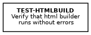
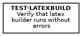
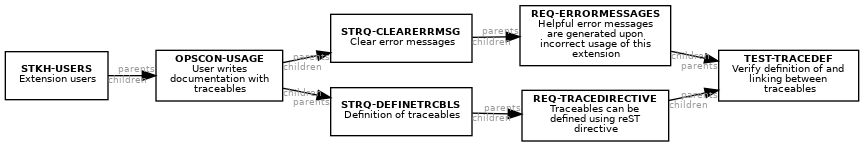
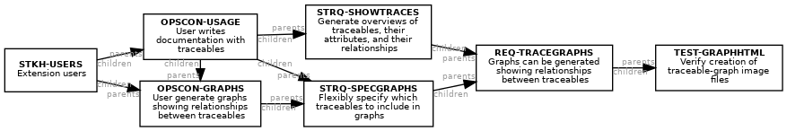
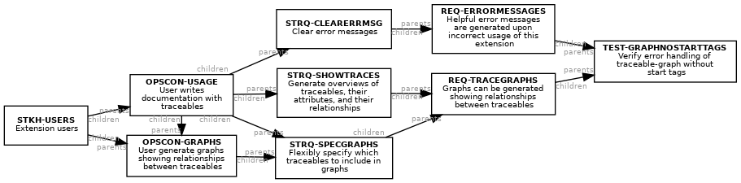
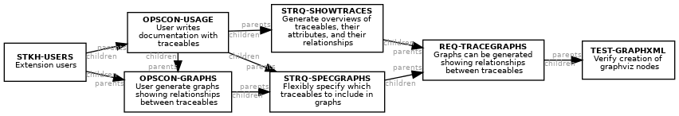

Verification Plan¶
Test¶
Basic test cases¶
-
test_basics.test_html_builder(app)[source]¶ Verify that html builder runs without errors
TEST-HTMLBUILD-- Verify that html builder runs without errorscategory Test test_type auto This test case verifies that the html builder can be run for basic usage of this extension. This test case also checks some basic aspects of the output HTML.
Traceable graph¶
-
test_basics.test_latex_builder(app)[source]¶ Verify that latex builder runs without errors
TEST-LATEXBUILD-- Verify that latex builder runs without errorscategory Test test_type auto This test case verifies that the latex builder can be run for basic usage of this extension. This test case only checks that the builder runs without error; it does not check any of the output.
Traceable graph¶
-
test_basics.test_xml_basics(app, warning)[source]¶ Verify definition of and linking between traceables
TEST-TRACEDEF-- Verify definition of and linking between traceablesparents REQ-ERRORMESSAGESREQ-TRACEDIRECTIVEcategory Test test_type auto This test case verifies that traceable directives result in the expected output using the XML builder. It also checks that links between traceables are output as expected, including that a helpful error message is generated when the input references a nonexistent traceable.
Traceable graph¶
Traceable graph test cases¶
-
test_graph.test_graph_html(app)[source]¶ Verify creation of traceable-graph image files
TEST-GRAPHHTML-- Verify creation of traceable-graph image filesparents REQ-TRACEGRAPHScategory Test test_type auto This test case verifies that a graph directive results in and output image file in HTML output. That effectively shows that the directive is processed, and that graphviz is then called and successfully generates an output image file. This test case does not verify that the output image is correct.
Traceable graph¶
Verify error handling of traceable-graph without start tags
TEST-GRAPHNOSTARTTAGS-- Verify error handling of traceable-graph without start tagsparents REQ-ERRORMESSAGESREQ-TRACEGRAPHScategory Test test_type auto This test case verifies that a graph directive, for which no valid start tags have been defined, generates a descriptive error message.
Traceable graph¶
-
test_graph.test_graph_xml(app)[source]¶ Verify creation of graphviz nodes
TEST-GRAPHXML-- Verify creation of graphviz nodesparents REQ-TRACEGRAPHScategory Test test_type auto This test case verifies that a graph directive results in a graphviz node in XML output. That effectively shows that the directive is processed. This test case does not verify that the output diagram is generated, because the XML builder doesn’t do further processing.
Traceable graph¶